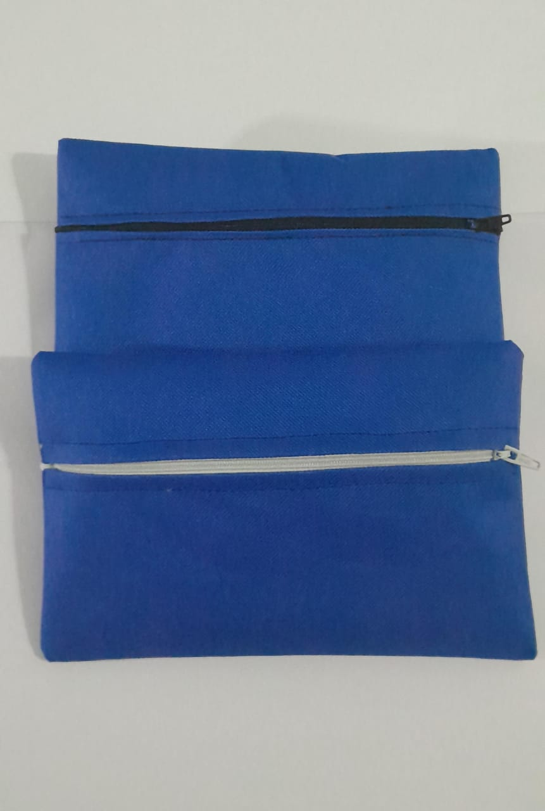
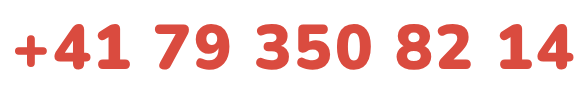

Tools to learn, draw and begin again
School and creative materials for 1,500 children affected by the recent earthquakes in Venezuela — delivered before the school year restarts on 15 September.
The first batch of 600 kits has moved decisively into delivery and assembly. Materials are being brought together at the Faculty of Sciences, UCV, in Caracas.

78% of the 600 locally made waterproof pencil cases have already been received. Each measures approximately 20 × 14 cm and keeps the drawing materials together for everyday use.
Donate from CHF 1
Every franc counts. Open your TWINT app, choose “Send”, and enter the number — use the reference so we can track kit donations.
Questions or larger donations: LinkedIn — Arturo Sánchez Pineda
Follow the initiative: LinkedIn — Creative Commons Venezuela

What your donation buys

1 waterproof pencil case · 1 large drawing pad with 20 blank bound sheets · 12 coloured pencils · 4 graphite pencils · 1 metal sharpener

Drawstring bag · pencil case · reusable folder with pocket and clip · 60 white sheets · 12 coloured pencils · 4 graphite pencils · 1 sharpener